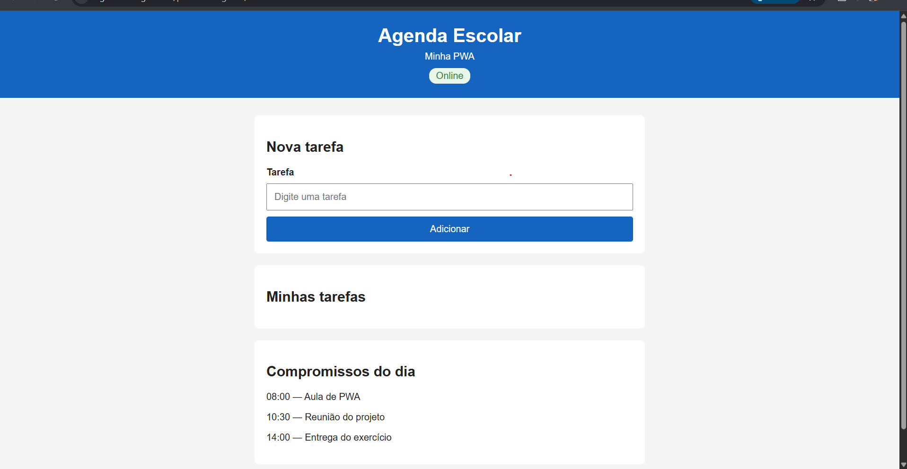
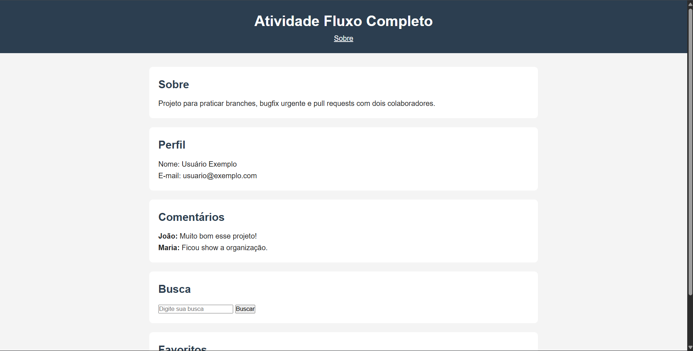

ControlePessoal
API REST de finanças pessoais, com rotas para cadastrar e consultar receitas e despesas, regras de negócio separadas em serviços e tratamento de erros.
Minha participação: desenvolvi a API completa, da modelagem do banco às rotas.
Estudante de Técnico em Informática
Construo sites e APIs com JavaScript e tenho experiência prática em atendimento e rotinas administrativas. Este portfólio reúne minha trajetória profissional e acadêmica.
Sou o Kauã e estou concluindo o curso Técnico em Informática. Gosto de transformar uma ideia em algo que funciona no navegador e no celular. Na prática, isso significa aprender fazendo: cada atividade da faculdade virou um repositório e, sempre que possível, um site publicado.
Do atendimento a empresas ao atendimento no banco, aprendi a resolver problemas reais e a lidar com muita gente por dia.
Atendo cerca de 50 pessoas por dia, ajudando clientes a usar o autoatendimento e a resolver questões no internet banking.
Atendi cerca de 10 empresas por dia, em jornada de 4 horas, resolvendo problemas de notas fiscais, boletos e contas a pagar e a receber.
Técnico em Informática no IFMS, campus Nova Andradina, com cursos complementares de atendimento ao cliente e informática básica.
Busco uma oportunidade na área administrativa, unindo atendimento, rotina financeira e tecnologia.
Do primeiro commit até os projetos completos, na ordem em que aprendi.
Atividades de branches, correção de bugs e fluxo completo de trabalho: criar branch, commitar, abrir pull request e fazer merge.
Ver repositórioAplicações que funcionam bem no celular: PWA, Offline First e App Shell, com service worker e manifest.
CRUD em React com Vite, usando fetch, tratamento de erros e um módulo central de requisições (api.js).
Estudos sobre assinatura digital, certificação digital, footprinting e engenharia social.
API REST de finanças pessoais, com rotas para cadastrar e consultar receitas e despesas, regras de negócio separadas em serviços e tratamento de erros.
Minha participação: desenvolvi a API completa, da modelagem do banco às rotas.
Aplicativo web instalável para organizar tarefas e compromissos da escola, que continua abrindo mesmo sem internet.
Minha participação: interface, lógica em JavaScript, service worker e manifest.
Lista, cadastro, edição e exclusão de usuários consumindo uma API, com módulo de requisições reutilizável e tratamento de erros.
Minha participação: componentes React e refatoração para o módulo api.js.
Ainda não tenho participações para registrar aqui. Quando houver feiras, apresentações ou premiações, elas aparecem nesta seção.

PWA para organizar a rotina escolar, com funcionamento offline.
Abrir site
Páginas das atividades de branches, bugfix e fluxo completo, publicadas no GitHub Pages.
Abrir site